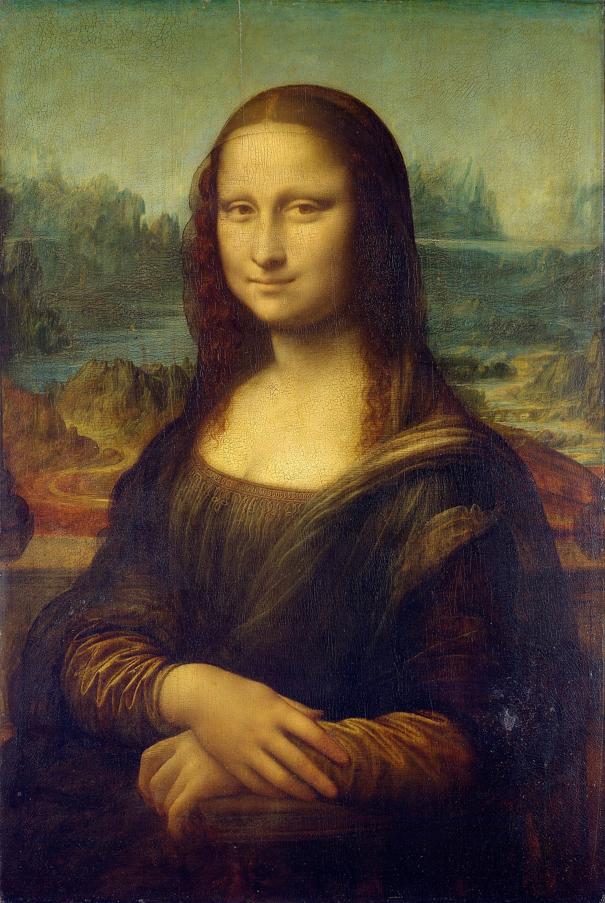
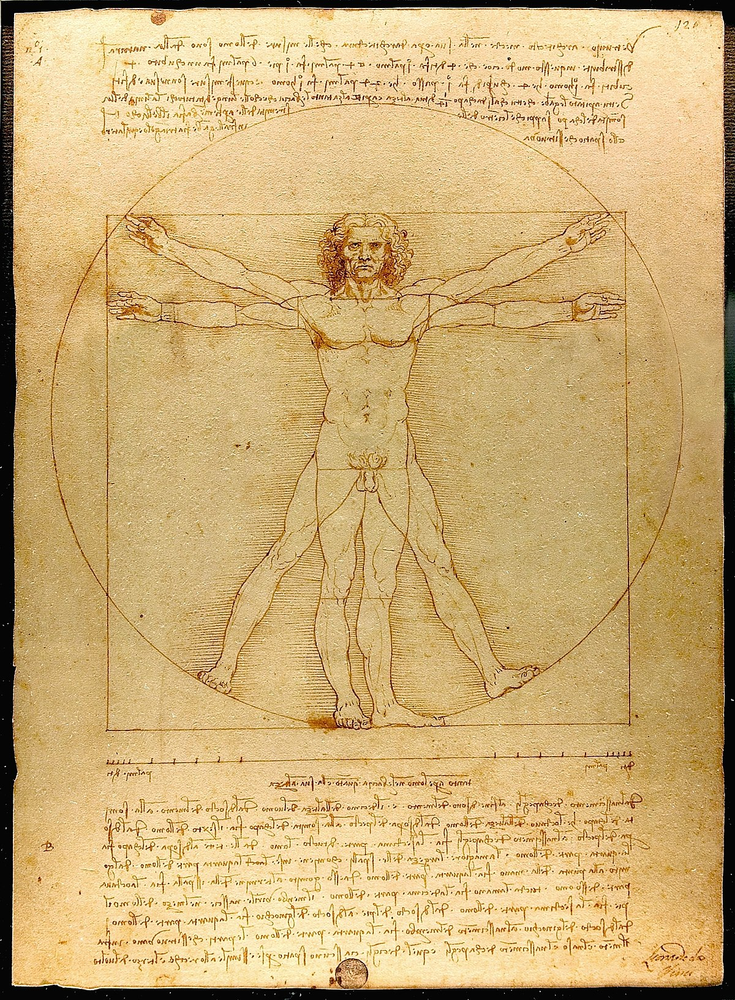
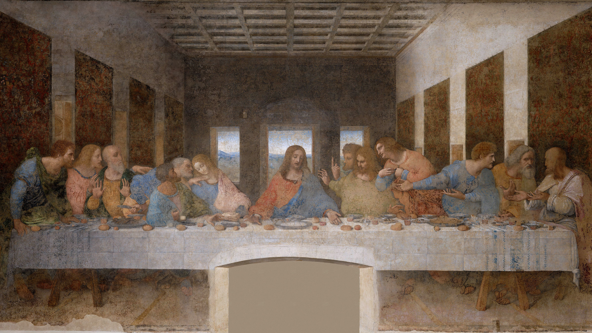
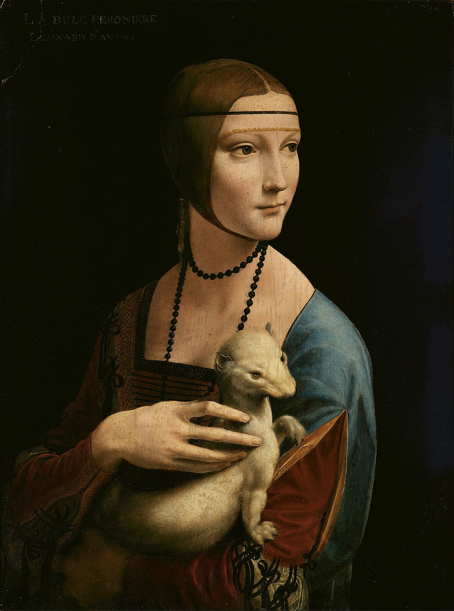

Leonardo da Vinci
Some of da Vinci's Paintings




Facts and stuff
Leonardo da Vinci. He was born on April 14/15, 1452 and died on May 2, 1519. da Vinci is widely known as one of the greatest painters, he was also known for drawing, sculpting, science, engineering, architecture, and anatomy. He painted the Mona Lisa which is one of, if not the most famous painting there is. da Vinci also painted The Last Supper, the most famous religeous painting, and drew the Vitruvian Man. But not only did he paint, he also helped invent the parachute, and conceptually, invented many other things we use today.